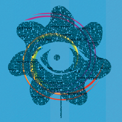

Festivali animiranega filma
| Festivali | Spletna stran |
|---|---|
| Vetrnica | www.festivalvetrnica.si |
| Animaketa | www.animateka.si |
| ECFA | www.ecfaweb.org |
Pridruži se:


| Festivali | Spletna stran |
|---|---|
| Vetrnica | www.festivalvetrnica.si |
| Animaketa | www.animateka.si |
| ECFA | www.ecfaweb.org |